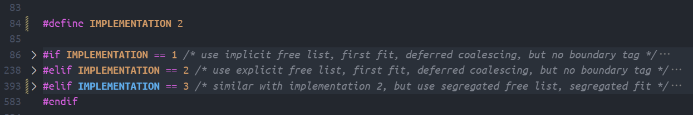
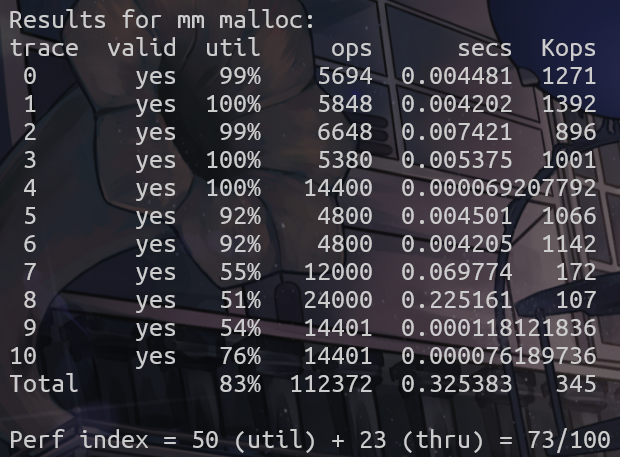
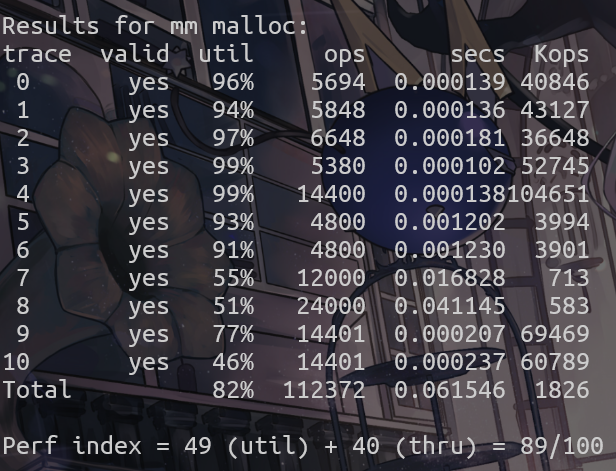
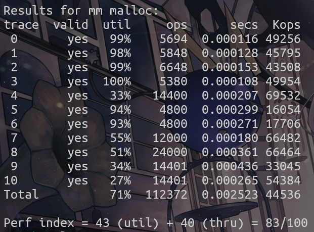

实验内容本身很简单，实现一个内存分配器，用来动态地管理内存分配和回收。即实现 mm_malloc mm_free mm_realloc 三个函数。使得能合理地对用户的内存请求进行分配和回收，并尽可能的提高内存利用率和吞吐率。
分配器有几点要求：
教材中提供了 “隐式空闲链表” “显式空闲链表” “分离空闲链表” 三种方法。它们各有优劣。
我在实验中，分别实现了这三个链表，通过 IMPLEMENTATION 宏来选择具体实现。

分配器有大量的对指针的操作，以及内存对齐，指针计算等等，仿照教材的方法，将常用的一些运算使用宏定义封装
由于一个块由头部（和前驱后继指针）和数据，而且和用户接触的都是数据域的指针，因此除非特别说明，所有的指针都指向块的数据域，对头部的访问，通过宏 HDRP 来完成。
#define HDRP(bp) // 不同链表的块中数据域位置不同，需要在具体实现中分别定义
#define DSIZE 8 // 双字，8字节，代码中用不到单字
#define ALIGNMENT 8 // 内存对齐，8字节
#define CLASS_NUM 20 // 块分类数量，只在分离空闲链表中用到
#define ALIGN(size) (((size) + (ALIGNMENT-1)) & ~0x7) // 对齐，计算 size 向上取整到 8 的倍数
#define PACK(size, allocated) ((size) | (allocated)) // 在快头部中打包块大小和分配标记
#define READ(p) (*(unsigned long *)(p)) // 将 p 以 8 字节解引用
#define WRITE(p, val) (*(unsigned long *)(p) = (val)) // 在 p 的位置写入 8 字节的 val
#define GET_SIZE(word) (READ(word) & ~0b111) // word 是块头部的指针，获取块大小
#define GET_ALLOC(word) (READ(word) & 0b1) // 获取分配标记
#define NEXT(bp) (char *)(bp) + GET_SIZE(HDRP(bp)) // 计算紧邻的下一个块的地址，注意和 SUCC 做区分
#define SUCC(bp) *((void **)HDRP(bp) + 2) // 计算后继块的地址，注意和 NEXT 做区分
#define PRED(bp) *((void **)HDRP(bp) + 1) // 计算前驱块的地址
#define SET(bp, val) WRITE(HDRP(bp), GET_SIZE(HDRP(bp)) | (val)) // 设置块的分配标记
将堆空间视为足够大的数组，在其中划分出大小不一的块，作为链表的 “结点” ，每个块由两个部分构成，分别为 “头部” 和 “数据” 。头部中又包含两个信息 “大小” 和 “分配标记”，为了保证 8 字节对齐，块大小一定为 8 的倍数，那么它的低三位固定为 0，所以可以利用起来，作为分配标记。结点间的逻辑关系，由每个结点头部的大小域决定。如果能保证块与块之间紧密相连，那么通过读取块的大小，可以计算出后继块的地址。
关于空闲块的合并，没有使用教材中描述的 “立即合并”（在出现空闲块时，立即尝试合并周围的空闲块），而是使用 “推迟合并”（在需要空闲块时才尝试合并，否则保持不变）。正因如此，我没有使用脚部。脚部是方便寻找前驱，以便方便实现立即合并，而我的实现中不需要访问块的前驱，因此直接舍弃掉脚部。
可能用到的函数有
mm_init mm_malloc mm_free mm_realloc - 实验基本的函数，用于初始化，和接收请求extend_heap - 当堆中找不到合适的空闲块时，扩展堆本身，以创造新的空闲块。coalesce_block - 因为使用推迟合并，在遇到空闲块时，一定是相邻块中第一个空闲块，只需要向后合并。cut_block - 可能会遇到较大的空闲块，为避免浪费，将它切割成较小的块，切割出来的块标记为新的空闲块以便后续使用first_fit - 在寻找空闲块时有多种方法 “首次适配” “下一次适配” “最佳适配” 等，这里采用首次适配，利用块头部的大小信息，向后继跳转，将第一个找到的合适的空闲块作为分配的块，若找不到返回 NULL。基本流程如下：
malloc 请求，执行 first_fit 函数，它会从堆开头找到第一个适配的块并返回，
cut_block 将它分割成最小的足够大的块，标记为 “已分配” 作为返回值输出。NULL，说明堆中不存在合适的块，执行 extend_heap 扩展堆，创造新的空闲块，并将新块直接作为分配块它作为返回值。free 请求，将它的分配标记置 0 即可。realloc 请求：
cut_block 将它分割，分割的新块作为空闲块，原块直接输出。coalesce_block 合并相邻的空闲块。在合并完成后若仍不能满足，则执行 mm_malloc 重新分配。然后调用 memmove 将原数据复制到新块中，对原块调用 mm_free，并返回新块的地址。以下是具体实现的细节
通过全局变量 heap heap_end 来记录堆的起始地址和结束地址。
这两个指针也是指向块的数据域地址，假设堆真正的始末地址分别为
0x1000和0x2000，那么heap == 0x1008, heap_end == 0x2008。
关于首次适配：从 heap 开始遍历整个堆。每次访问到空闲块，如果满足要求直接返回，否则尝试合并块，根据合并结果，合并成功则不做操作继续检查这个块，合并失败则遍历只后继，最终返回适配块地址或 NULL。
当访问到空闲块时，如果满足要求则返回，否则尝试合并。合并成功就重新访问自身，失败就说明这个块 （1. 不能满足要求，2. 不能合并），就遍历下一个块。
因为是从堆起始开始遍历，对每组连续的空闲块组，一定会访问到它的首个块。从首个块开始不需要向前合并。
关于切割块：因为空闲块至少需要一个头部，它的大小至少为 8，所以切割时，若剩余空间不足以容纳最小空闲块，则不切割，则不做操作，直接将多余部分一并作为块的内容。
（其实由于对齐的存在，除非是块大小恰好满足的情况，一定可以切割，这使得检查的必要性在这个实现中体现不出来，后面的两个实现才会有用武之地）。
关于合并块：只有在后面存在块，并且是空闲块时，执行合并，并返回 1 表示合并成功，否则不做处理并返回 0 表示合并失败。
由于上面提到的
realloc中原地扩展的可能性，不对块本身做是否空闲的检查。这一点在第三个实现中有变化，在那里，已分配块和空闲块的合并分别由各自的函数实现。
关于扩展堆：为防止多余空间浪费，需要多少申请多少，将扩展出的空间标记为空闲块，不要忘记调整 heap_end 的值，并将 新堆空间的真正起始地址 返回。
其实一开始尝试过 “缺多少申请多少”，即要先查询当前堆最后一个块的空闲（不空闲则取 0）的大小，将它和需求作差，扩展差值的堆空间，这样可以进一步提高空间利用率，但实现比较困难，遂放弃。
理论上返回数据块地址也是可行的，只需要在接收返回值的位置调整偏移即可，但一开始选择了真正地址，没有必要改变
int mm_init(void) {
heap = mem_sbrk(1 * DSIZE); //初始化时默认申请一个数据域大小为 0 的空块，总大小为 8 字节
if (heap == (void *)-1)
return -1;
heap += DSIZE;
WRITE(HDRP(heap), PACK(1 * DSIZE, 0));
heap_end = (char *)heap + 1 * DSIZE;
return 0;
}
static void cut_block(void *bp, size_t size) { // 切割和合并块时注意，原块的分配标记要保持不变
size_t block_size = GET_SIZE(HDRP(bp));
if (block_size >= DSIZE + size) {
WRITE(HDRP(bp), PACK(size, GET_ALLOC(HDRP(bp))));
WRITE(HDRP(bp) + size, PACK(block_size - size, 0));
}
}
static int coalesce_block(void *bp) {
void *next_bp = NEXT(bp);
if (next_bp >= heap_end || GET_ALLOC(HDRP(next_bp)))
return 0;
WRITE(HDRP(bp), PACK(GET_SIZE(HDRP(bp)) + GET_SIZE(HDRP(next_bp)), GET_ALLOC(HDRP(bp))));
return 1;
}
static void *extend_heap(size_t size) {
void *new_area = mem_sbrk(size);
if (new_area == (void *)-1)
return NULL;
WRITE(new_area, PACK(size, 0));
heap_end += size;
return new_area;
}
static void *first_fit(size_t size) {
void *currentbp = heap;
while(currentbp < heap_end) {
if (GET_ALLOC(HDRP(currentbp))) {
currentbp = NEXT(currentbp);
continue;
}
if(GET_SIZE(HDRP(currentbp)) >= size)
return currentbp;
if (!coalesce_block(currentbp))
currentbp = NEXT(currentbp);
}
return NULL;
}
void *mm_malloc(size_t size) {
size = ALIGN(size + DSIZE);
void *currentbp = first_fit(size);
if(currentbp == NULL)
currentbp = extend_heap(size) + DSIZE; // extend_heap 的返回值是真正地址，注意偏移到数据域
cut_block(currentbp, size);
return WRITE(HDRP(currentbp), PACK(size, 1)), currentbp;
}
void mm_free(void *ptr) {
if (ptr == NULL)
return;
SET(ptr, 0); // 只需设标记为空闲，至于合并，等待后续访问
}
void *mm_realloc(void *ptr, size_t size) {
void *newptr = NULL;
if (ptr == NULL)
return mm_malloc(size);
if (size == 0)
return mm_free(ptr), NULL;
size = ALIGN(size + DSIZE); // 实际需要要多一个 8 字节头部
while(coalesce_block(ptr)); //尽可能多合并
if (GET_SIZE(HDRP(ptr)) >= size)
return cut_block(ptr, size), ptr;
newptr = mm_malloc(size - DSIZE); // 如果能到达这里说明上面的尝试都失败了，只能重新分配
if (newptr == NULL)
return NULL;
memmove(newptr, ptr, GET_SIZE(HDRP(ptr)) - DSIZE);
WRITE(HDRP(newptr), PACK(GET_SIZE(HDRP(newptr)), 1));
return mm_free(ptr), newptr;
}

可以看到，上面的结果中，空间利用率比较不错，吞吐率仍然有提升空间。
事实上，绝大部分时间都用在寻找适配块上，而寻找适配块的 first_fit 中，又有大部分时间在访问已分配块，尽管直接跳过，但还是极大的浪费。一个优化方法是，将空闲块直接链接起来，通过在空闲块中加入两个指针，指向它的前一个和后一个空闲块，分别叫做 “前驱” 和 “后继” 指针，形成显式空闲链表。
随着空闲块中，前驱指针域和后继指针域的加入，导致这些问题的出现：
bp 代指空闲块的数据域地址（头部地址 + 3 * DSIZE），以 ptr 代指已分配块的数据域地址（头部地址 + 1 * DSIZE）HDRP(bp) 宏也要修改：从 #define HDRP(bp) (char *)((unsigned long *)(bp) - 1) 修改为 #define HDRP(bp) (char *)((unsigned long *)(bp) - 3)还有很多其它的改变
heap_end，需要一个额外结点表示链表末尾，如果将链表设置为循环链表，那么它的后继就是链表开头，不需要额外的开头结点。在遍历空闲块时，只需从末尾块的后继开始，回到末尾块结束。在代码中，将 heap 变量设定位链表尾结点，而非堆起始。以下是代码，只将重要的修改贴出来，其他简单修改就省略了。完整代码可以直接看 mm.c
int mm_init(void) {
heap = mem_sbrk(3 * DSIZE); // 最小空闲块为 3 个双字，作为尾结点
if (heap == (void *)-1)
return -1;
heap = heap + 3 * DSIZE;
WRITE(HDRP(heap), PACK(3 * DSIZE, 1)); // 单独标记为已分配，以防可能的意外（事实上没有意外
PRED(heap) = heap; // 在链表为空时，前驱和后继都指向自己
SUCC(heap) = heap;
heap_end = heap + 3 * DSIZE; // heap_end 仍然表示堆的末尾
return 0;
}
static void *first_fit(size_t size) {
void *currentbp = SUCC(heap); // 优化的核心，仅访问空闲块
while(currentbp != heap) { // 跳过已分配块的代码也可以删掉了
if (coalesce_block(currentbp))
continue;
if(GET_SIZE(HDRP(currentbp)) >= size)
return currentbp;
currentbp = SUCC(currentbp);
}
return NULL;
}
static void insert(void *bp) { // 默认插入到尾结点前面
PRED(bp) = PRED(heap);
SUCC(PRED(bp)) = bp;
SUCC(bp) = heap;
PRED(SUCC(bp)) = bp;
}
static void erase(void *bp) {
PRED(SUCC(bp)) = PRED(bp);
SUCC(PRED(bp)) = SUCC(bp);
}
static void cut_block(void *bp, size_t size);
// 其中切割条件判断改为 block_size >= 3 * DSIZE + size
// 因为最小空闲块的大小变成了 3 个双字
// 以及，切割的新块要 insert 到空闲链表中
static int coalesce_block(void *bp)
// 合并掉的块从链表中 erase 掉
static void *extend_heap(size_t size)
// 添加了 if (size <= 3 * DSIZE) size = 3 * DSIZE;
// 保证最小空闲块的大小为 3 个双字
// 以及空闲块的 insert
void *mm_malloc(size_t size) {
size = ALIGN(size + DSIZE);
void *currentbp = first_fit(size);
if(currentbp == NULL) {
/* 这里也可以修改为 currentbp = extend_heap(size) + DSIZE; */
/* 能实现，因为扩展后的新块肯定可以满足 */
/* 但这会使得这个块前面可能存在的小块空闲不被使用，造成浪费*/
/* 而重新搜索消耗的时间，不会影响分数，所以不采用 */
/* 相较于上一个实现，这里的空间利用率价值更大 */
extend_heap(size);
currentbp = first_fit(size);
}
cut_block(currentbp, size);
erase(currentbp);
SET(currentbp, 1);
return currentbp - 2 * DSIZE; // 数据域位置不同
}
void mm_free(void *ptr)
// free 后 insert
void *mm_realloc(void *ptr, size_t size)
// 最重要的是空闲块和已分配块的数据域位置问题，需要将 ptr 和 bp 分开处理，其余不变。

还有另一种实现方法，根据空闲块大小不同，分成多个不同链表
例如，将大小为 0 ~ 32 的块放入一个列表，33 ~ 64 的块放入另一个列表，65 ~ 128 的块放入第三个列表，以此类推。
这样，查找和分配块时，只需要遍历相应的链表即可，而不需要在整个堆中寻找，可以进一步优化。
我实际采用的也正是按照 2 的幂次划分，将它们总共分为了 15 个链表。
一些其它的修改有：
heap 变量来定位，而是需要根据块的大小选择相应的链表，添加函数 find_list 用于找到对应链表，返回值是链表的尾结点，和上一个实现中的 heap 是等价的。erase，操作后再 insert。realloc 的调整realloc 中调用的 coalesce_block 或 cut_block，那么块是已分配的，不再空闲链表中，这时从链表中 erase 会发生内存泄漏的段错误，所以需要编写用于已分配块的合并和切割函数，分别叫做 expand_block 和 shrink_block；后两者和之前的函数一样，前两者需要添加对参数 bp 的 erase 和 insert 操作。比较重要的修改有
static void *find_list(size_t size) { // 在堆起始处存放有每个链表的尾结点，找到大小对应的链表的尾结点
int i = 0;
for (i = 0; i < CLASS_NUM - 1; i++)
if (size <= (1 << (i + 5)))
return (heap + i * 3 * DSIZE);
return (heap + (CLASS_NUM - 1) * 3 * DSIZE);
}
/* 对多个链表的初始化，形式和大不相同。每一个链表的尾结点都指向自己的初始化。
*/
int mm_init(void) {
int i = 0;
heap = mem_sbrk(CLASS_NUM * 3 * DSIZE);
if (heap == (void *)-1)
return -1;
heap += 3 * DSIZE;
heap_end = heap + CLASS_NUM * 3 * DSIZE;
for(i = 0; i < CLASS_NUM; i++) {
WRITE(HDRP(heap + i * 3 * DSIZE), PACK(3 * DSIZE, 1));
SUCC(heap + i * 3 * DSIZE) = heap + i * 3 * DSIZE;
PRED(heap + i * 3 * DSIZE) = heap + i * 3 * DSIZE;
}
return 0;
}
/*
* link_end 指链表的尾结点
* 因为只需要从大小更大的链表开始寻找，所以循环的初始值是 find_list(size)
* 在链表内的操作和上一个实现完全一致，当一个链表找不到合适的块时，才会进入下一个链表
*/
static void *first_fit(size_t size) {
void *link_end = NULL;
for(link_end = find_list(size); link_end < heap + CLASS_NUM * 3 * DSIZE; link_end = NEXT(link_end)) {
void *currentbp = SUCC(link_end);
while(currentbp != link_end) {
if (coalesce_block(currentbp)) {
currentbp = SUCC(link_end);
continue;
}
if(GET_SIZE(HDRP(currentbp)) >= size)
return currentbp;
currentbp = SUCC(currentbp);
}
}
return NULL;
}
static void insert(void *bp)
在开头添加 void *res = find_list(GET_SIZE(HDRP(bp))); 语句，用于寻找对应的链表，其中 res 仅替换原本的 heap 变量，其余不变。
以及上文中提到的 expand_block 和 shrink_block 函数，它们的实现和之前的函数一样；用于替换 realloc 中的 coalesce_block 和 cut_block 函数。同时原本的 coalesce_block 和 cut_block 函数则添加 erase(bp) 和 insert(bp) 操作，以适应多个链表。

非常明显的是，吞吐率的提升幅度极大，甚至是在跑测评程序时都能感受到明显的更快。
但令我意外且失望的是，它的空间利用率意外地很低，比前两个实现都要低，链表类数越高利用率越低。
理论上来讲因为它总是尽可能先使用小较小的块，空间利用率应当接近最佳适配，但实际上并不理想，可能是我程序实现的问题，也可能是其它问题，姑且先不深究了。
综上。这次实验思路不难，但代码实现非常困难，由 WakaTime 统计的编程时间大于 24 小时。倘若没有使用 VSCode 而是命令行 gdb 调试，必然是更大的挑战。
实现了三种不同的分配方法，结果分别为：
除了意料之外的分离空闲链表的低利用率之外，其它结果都满意。
完整代码可以直接看 mm.c，通过 84 行的 #define IMPLEMENTATION ?来选择哪种实现